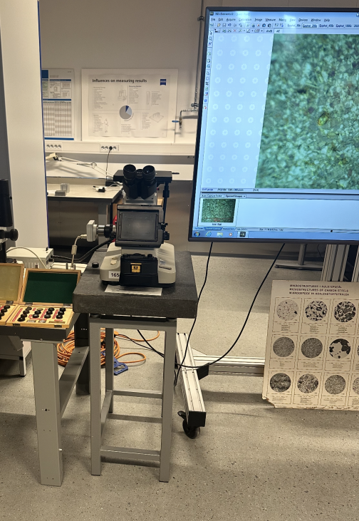
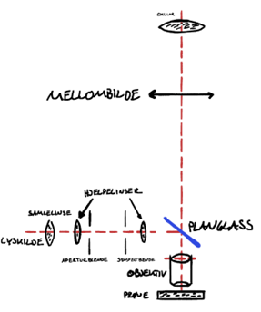
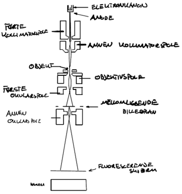
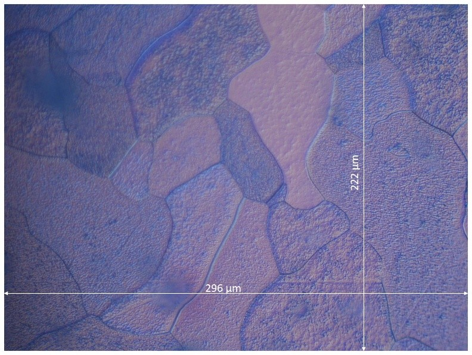
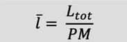
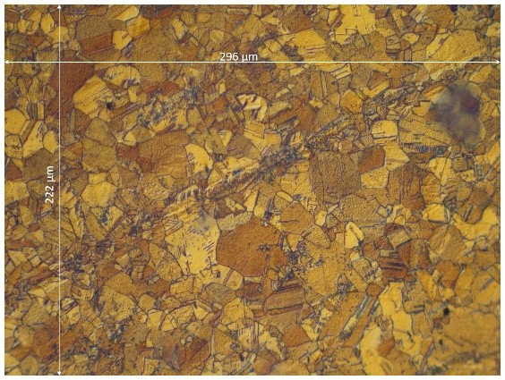
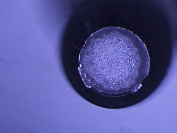
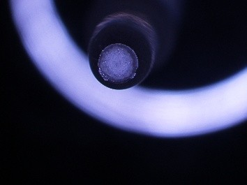

Metallographic Microscopy

Preparation of the Material Sample
To gain a clear view of the material structure in the sample we want to examine, the material must be prepared for metallographic microscopy. The general process involves:Examination and Microscopes
We mainly use two types of microscopes: the light microscope and the electron microscope.Light Microscope

A metallographic light microscope is designed so that light shines onto the surface of a metal sample and reflects back into the microscope, allowing us to see what's there. When light hits the surface, it scatters in different directions depending on the texture, revealing patterns, edges, and contrasts in brightness — some areas appear lighter, others darker. If the light strikes the metal surface at an angle, it creates small shadows, helping us see variations in surface height. The diagram shows how the light (red dotted line) travels through the microscope. Light behaves like a wave, similar to ripples on water. A light microscope can magnify an image 1,000 to 1,500 times, but no more than that.Electron Microscope

An electron microscope uses electrons instead of light to create an image. Electrons are tiny particles in atoms that can also behave like waves, but their wavelength depends on their speed. There are two main types of electron microscopes used for studying metals: TEM and SEM.TEM (Transmission Electron Microscope):
In this method, electron beams pass through the sample. Therefore, the sample must be extremely thin — comparable to a human hair sliced a thousand times thinner. It's also possible to make a plastic replica of the metal surface and observe that under the microscope. There are several methods for creating such replicas.SEM (Scanning Electron Microscope):
A narrow electron beam scans across the surface of the sample, similar to how an image is drawn on a TV screen. Where the beam hits the surface, secondary electrons are emitted. These are collected and counted to map out the surface topography. This produces a detailed image of the sample surface on a screen.
Microscopy and Microstructure Analysis
Microscopy investigations provide valuable insight into the microstructure of materials and how processing history influences their mechanical properties. To determine the average grain size in a material, we divide the length of a reference line by the number of grains it intersects:
Vertical line: 222 µm / 4 = 55.5 µmHorizontal line: 296 µm / 5 = 59.2 µm

Al-Mg-Si alloy
This sample, in contrast, exhibits a much finer grain structure. In the cold-deformed Al-Mg-Si alloy, we observe impurities arranged in parallel lines, which is typical of plastic deformation. This indicates that the material has undergone significant shape change without heat treatment, which increases strength but reduces ductility.Carbon Steel Sample, Strenght Tested
The carbon steel sample, which has been subjected to tensile stress until failure, displays a crater-shaped fracture surface. This is characteristic of a ductile fracture, where the material experiences substantial plastic deformation before breaking. On the microscopic level, the process begins with the formation of small voids (microvoids) at weak points in the material, often near inclusions, slag particles, or other irregularities. As tensile stress increases, these voids grow and begin to coalesce, eventually forming a continuous crack that leads to failure.

Microscopically, this appears as a surface with numerous small dimples, reflecting where the microvoids formed and ruptured. This type of fracture indicates that the material has high strain capacity and a strong ability to resist crack propagation over time.